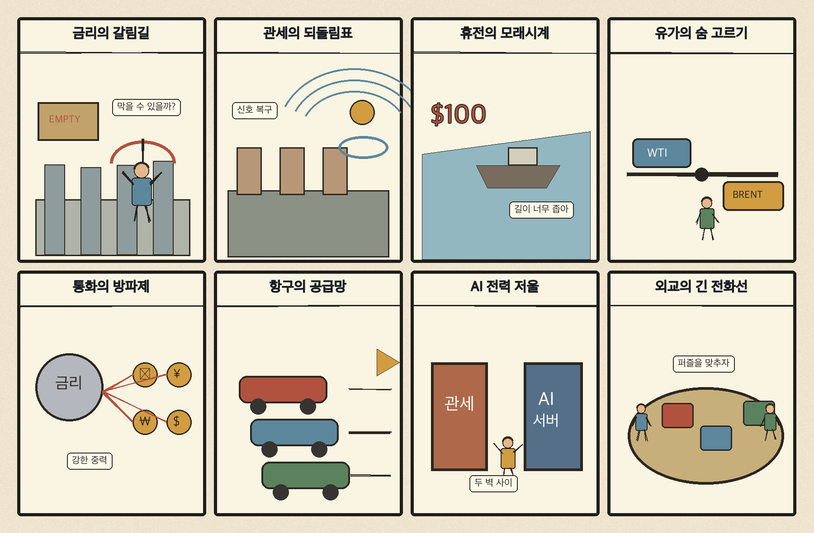
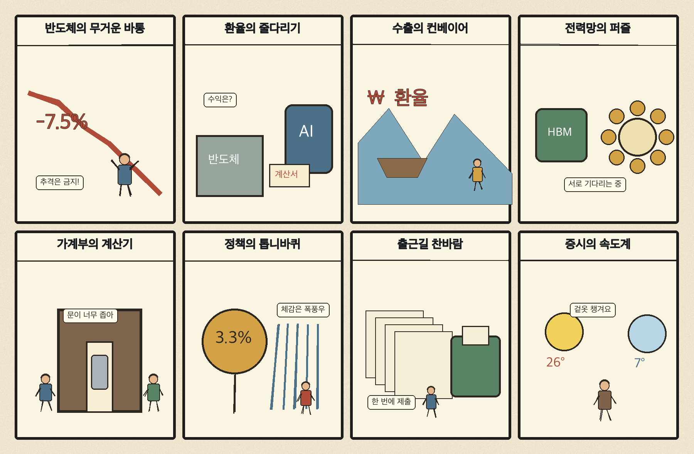

01
오라클 · 131.32→144.54달러 · +10.07%
내용요약 시가 대비 +10.07%로 조사군 최상위였으며 기업용 소프트웨어·클라우드 기대가 매수세를 이끌었습니다.
예상여파 국내 데이터센터 공급망 심리에는 긍정적이지만 단일 종목 급등을 국내 종목의 매수 신호로 직접 연결해서는 안 됩니다.
MORNING_BRIEFING_20261029
작성 시각: 2026-10-29 06:33 KST · 직전 미국 정규장과 2026-10-29 KST 당일 공개 기사 기준
직전 미국 정규장인 10월 28일 뉴욕증시는 연준의 금리 동결 속 다우 +0.19%, S&P 500 +0.28%, 나스닥 +0.27%로 완만히 상승했습니다. 다만 엔비디아는 시가 대비 -2.05%였고 장 마감 뒤 알파벳은 AI 투자 부담으로 약세를 보여 국내 기술주에는 지수 상승보다 종목별 차별화가 중요합니다. 전일 KOSPI가 +6.63% 급등해 6000선을 넘은 만큼 오늘은 추격보다 개장 갭과 환율·외국인 수급을 우선 확인해야 합니다.
| 지수 | 종가 | 등락률 | 한국 증시 시사점 |
|---|---|---|---|
| 다우존스 | 52,475.10 | +0.19% | 경기민감주는 보합권 |
| S&P 500 | 7,743.98 | +0.28% | AI·반도체 투자심리 개선 |
| 나스닥 종합 | 26,549.85 | +0.27% | AI·반도체 투자심리 개선 |
연준 금리 동결 속 뉴욕 3대 지수가 완만히 상승했습니다.
중동 긴장과 이란 공격 가능성 우려로 유가가 반등했습니다.
전일 6000선을 넘었고 시가 대비 +4.31%, KOSDAQ은 +1.90%였습니다.
급등 뒤 갭 위험과 필수 검증 데이터 부족으로 현금 관망입니다.
10월 28일 보고서는 급반등 뒤 갭 위험과 필수 수급·컨센서스·유사 조건 표본 부족으로 공식 추천을 내지 않았습니다. 사후에 종목을 추가하지 않습니다.
| 시장 | 종가 | 등락률 | 기준 |
|---|---|---|---|
| KOSPI | 6,012.44 | +6.63% | 10월 28일 · 시가 대비 +4.31% |
| KOSDAQ | 771.28 | +3.69% | 10월 28일 · 시가 대비 +1.90% |
| 다우존스 | 52,475.10 | +0.19% | 미국 10월 28일 정규장 |
| S&P 500 | 7,743.98 | +0.28% | 미국 10월 28일 정규장 |
| 나스닥 종합 | 26,549.85 | +0.27% | 미국 10월 28일 정규장 |
오라클이 시가 대비 +10.07%로 조사군 최상위였습니다.
어플라이드머티리얼즈 +3.31%, 마이크론 +2.19%로 강했습니다.
캐터필러가 시가 대비 -2.28%로 조사군 하위였습니다.
엔비디아 -2.05%, 메타 -1.47%, 테슬라 -1.46%로 부진했습니다.
내용요약 시가 대비 +10.07%로 조사군 최상위였으며 기업용 소프트웨어·클라우드 기대가 매수세를 이끌었습니다.
예상여파 국내 데이터센터 공급망 심리에는 긍정적이지만 단일 종목 급등을 국내 종목의 매수 신호로 직접 연결해서는 안 됩니다.
내용요약 시가 대비 +4.31% 상승하며 기업용 인공지능 도입 기대를 반영했습니다.
예상여파 기업 AI 투자 확대가 컨설팅 수요로 이어질 수 있으나 프로젝트 수익성과 인력 비용을 함께 봐야 합니다.
내용요약 비트코인 민감도가 높은 종목 특성 속 시가 대비 +4.01% 상승했습니다.
예상여파 가상자산 관련 종목은 기초자산 변동성과 레버리지 위험이 커 추격매수를 피해야 합니다.
내용요약 산업재 조사군에서 시가 대비 -2.28%로 가장 부진했습니다.
예상여파 경기민감주 약세는 글로벌 설비투자 기대에 경계 신호지만 하루 움직임만으로 업황 전환을 단정하기 어렵습니다.
내용요약 지수 상승에도 시가 대비 -2.05% 하락해 AI칩 내부 차별화를 보였습니다.
예상여파 국내 HBM 공급망에는 단기 심리 부담이 될 수 있으나 실적·수요 전망과 개별 고객사의 조달 흐름을 구분해야 합니다.
미국 3대 지수의 완만한 상승과 연준 금리 동결은 위험선호에 중립 이상이지만, 엔비디아 약세와 알파벳 시간외 급락은 기술주 내부의 차별화를 예고합니다. 전일 KOSPI는 종가 기준 +6.63%, 시가 대비 +4.31% 급등했고 KOSDAQ도 시가 대비 +1.90% 올랐습니다. 오늘은 코스피 6000선 안착 여부, 원·달러 환율 1340원대, 외국인 현·선물 수급을 확인하며 장 초반 갭 상승 추격을 피하는 편이 낫습니다.
오늘은 추천 없음 — 현금 관망
전일까지의 외국인·기관 수급, 컨센서스 변화와 30건 이상 유사 조건 표본을 함께 확보해 종합점수 75점·상승확률 60%·예상 손익비 1.5를 모두 검증한 종목이 없습니다. 전일 KOSPI +6.63% 급등과 원화 약세가 동시에 나타나 장전 갭 위험도 커 추격 진입 기준을 충족하지 못했습니다.
관심 연결종목 AI 소프트웨어·반도체 장비·전력 인프라는 관찰 대상일 뿐 매수 추천이 아닙니다. 과도한 갭 상승 종목은 추격매수를 금지합니다.
금리 경로에 대한 후속 해석이 달러와 장기금리를 흔드는지 봅니다.
WTI 2.88% 반등과 이란 관련 긴장이 이어지는지 확인합니다.
급등한 지수와 1340원대 원·달러 환율의 괴리가 축소되는지 봅니다.
확정 실적과 반도체 수익성, 주주환원 메시지가 시장 기대를 충족하는지 점검합니다.
핵심 요약: 인공지능 산업은 모델 경쟁과 대규모 자본투자가 동시에 진행되는 가운데 투자 효율이 핵심 쟁점으로 떠올랐습니다. 알파벳의 시간외 약세는 비용 부담을 보여준 반면, 첨단 패키징 가격 인상과 빅테크 동맹 확대는 공급망의 협상력과 집중도를 높이고 있습니다.
내용요약 알파벳이 인공지능 투자 비용 부담과 시장 기대에 못 미친 실적 영향으로 시간외 거래에서 약세를 보였다는 뉴스1 당일 보도입니다.
예상여파 AI 투자의 매출 전환 속도와 자본지출 효율이 빅테크 밸류에이션을 가르는 핵심 변수가 될 수 있습니다.
내용요약 구글이 새 제미나이 모델을 공개하며 생성형 인공지능 경쟁에서 존재감을 높였다는 당일 보도입니다.
예상여파 모델 성능 경쟁은 클라우드·추론칩·데이터센터 수요를 키우지만 서비스 차별화와 비용 통제가 함께 요구됩니다.
내용요약 빅테크 기업들이 칩 공급을 넘어 자금과 사업 제휴까지 묶는 인공지능 동맹을 확대한다는 머니투데이 보도입니다.
예상여파 자본과 컴퓨팅 자원이 대형 생태계로 집중되면서 독립 스타트업의 조달·유통 경쟁은 더 치열해질 수 있습니다.
내용요약 TSMC가 인공지능 칩 패키징 가격을 20% 인상할 수 있다는 외신 보도와 함께 주가가 강세를 보였다는 내용입니다.
예상여파 첨단 패키징 병목은 공급자의 가격 결정력을 높이지만 팹리스와 서버 업체의 원가 부담을 키울 수 있습니다.
내용요약 경제인협회가 사내 인공지능을 외부 서비스와 구분하도록 인공지능법 개선을 건의했다는 연합뉴스 당일 보도입니다.
예상여파 기업 내부 도입의 규제 불확실성이 줄면 업무용 AI 확산이 빨라질 수 있으나 보안·책임 기준은 별도로 정교화해야 합니다.
핵심 요약: 연준은 금리를 동결했고 우크라이나는 미·러와의 3자 회담 시점을 제안했습니다. 이스라엘 총선과 이란 관련 긴장으로 국제유가는 다시 상승했으며, 유럽에서는 방산시설 보안 우려가 커졌습니다.
내용요약 우크라이나 대통령이 미국·러시아·우크라이나 3자 회담을 11월 6~10일 열자고 제안했으나 크렘린은 신중한 태도를 보였다는 연합뉴스 보도입니다.
예상여파 회담 일정이 구체화하면 지정학적 위험 프리미엄이 낮아질 수 있지만 당사국 간 의제 합의가 먼저 필요합니다.
내용요약 루마니아 방산업체 방화 용의자들이 체포됐고 수사당국이 러시아 배후 가능성을 살핀다는 당일 보도입니다.
예상여파 유럽 방산시설 보안 강화와 대러 경계가 높아지며 방산 공급망의 운영비용이 늘어날 수 있습니다.
내용요약 이스라엘 총선에서 현 집권 진영이 과반에 미달할 가능성이 제기됐다는 한겨레 당일 보도입니다.
예상여파 연정 구성의 불확실성이 커지면 중동 외교와 재정·안보 정책의 방향성이 단기적으로 흔들릴 수 있습니다.
내용요약 미국 연준이 정책금리를 동결했고 의장이 한국을 인공지능 핵심 부품 공급국으로 언급했다는 뉴스1 보도입니다.
예상여파 금리 동결은 예상 범위지만 향후 경로와 달러 움직임이 원화·외국인 수급을 좌우하며, 한국 공급망의 전략적 중요성은 부각됩니다.
내용요약 이스라엘 총선과 미국의 이란 공격 가능성을 주시하며 국제유가가 반등했다는 연합뉴스 보도입니다.
예상여파 유가 상승은 정유·에너지 업종에 우호적일 수 있지만 한국의 수입물가와 운송비에는 부담입니다.

핵심 요약: 코스피 6000선 돌파와 원화 약세가 동시에 나타나 수급의 질을 점검해야 합니다. 한·독 정상회담의 경제·방산 협력, 지역 전력망 확충, 농식품 수출 다변화를 살피는 한편 출근길 영하권 추위와 오후 비에도 대비해야 합니다.
내용요약 코스피가 6000선을 기록한 가운데 원·달러 환율이 장중 1340원대로 올라 주가와 환율의 괴리가 커졌다는 당일 외환 브리핑입니다.
예상여파 지수 강세에도 원화 약세가 이어지면 외국인 수급의 지속성과 수입물가 부담을 함께 점검해야 합니다.
내용요약 한국 대통령이 독일 총리와 정상회담을 열어 경제·방산 협력을 논의할 예정이라는 뉴스1 당일 보도입니다.
예상여파 제조업·방산 협력은 중장기 수주 기회가 될 수 있지만 실제 계약과 공동사업의 구체화를 확인해야 합니다.
내용요약 국산 신품종 포도 글로리스타가 중국으로 처음 수출됐다는 당일 보도입니다.
예상여파 농식품 수출 품목 다변화에 의미가 있으나 검역·유통망과 반복 주문이 사업성을 좌우합니다.
내용요약 고창이 대형 변전소를 자발적으로 유치해 전력 인프라를 지역 성장 기반으로 삼는 사례를 다룬 서울신문 보도입니다.
예상여파 데이터센터·첨단산업 전력망 확충에 참고가 되지만 주민 수용성과 송전망 투자 병행이 필요합니다.
내용요약 출근길 영하권 추위가 이어지고 오후부터 중부지방에 비가 내릴 전망이라는 뉴시스 당일 예보입니다.
예상여파 출퇴근길 체감온도와 도로 안전에 유의하고 농작물·시설물 냉해와 에너지 수요 증가에 대비해야 합니다.
